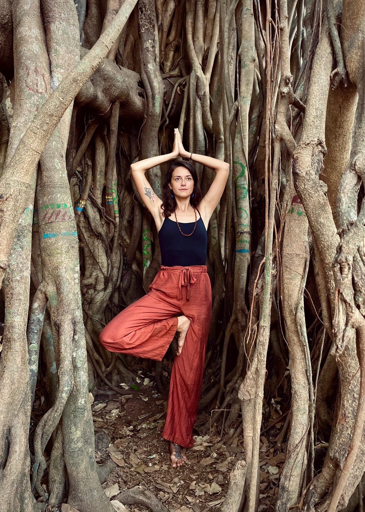
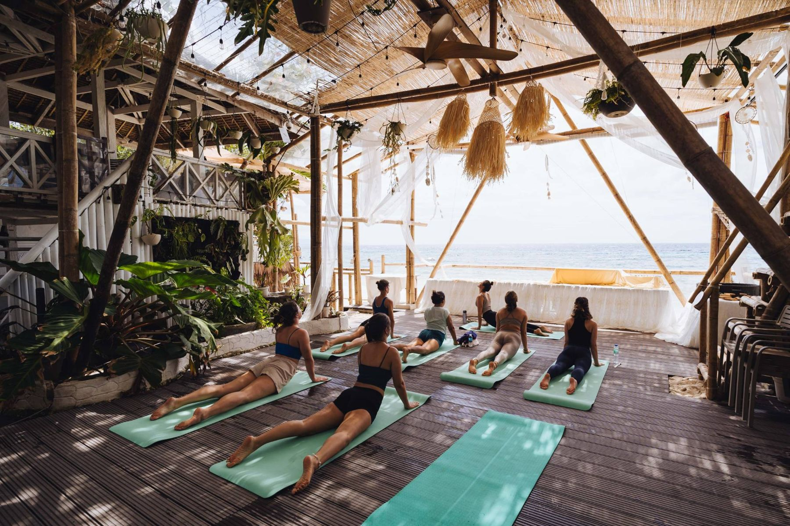
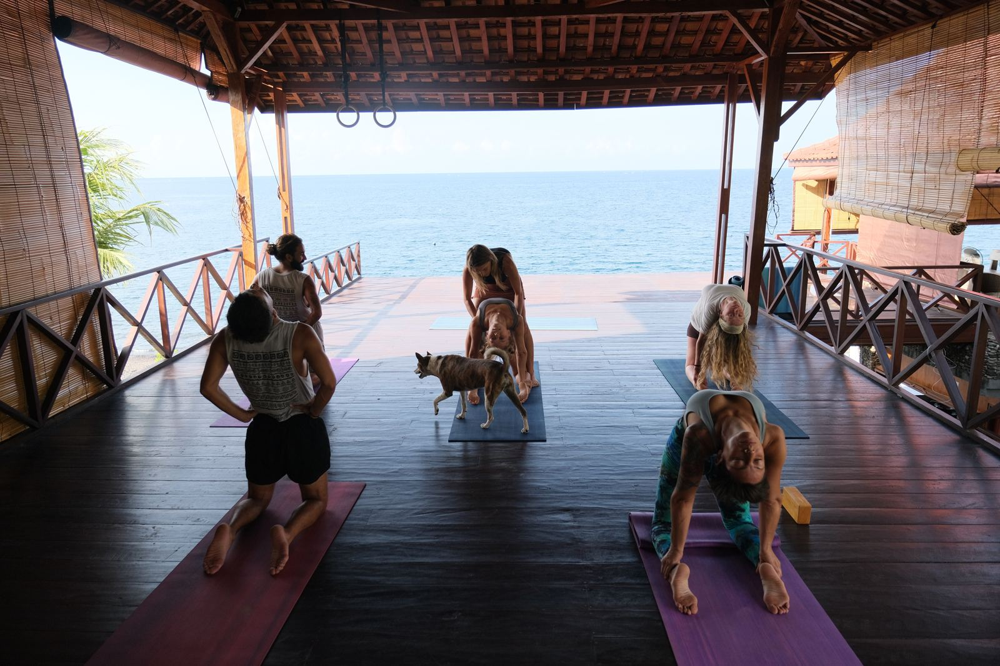
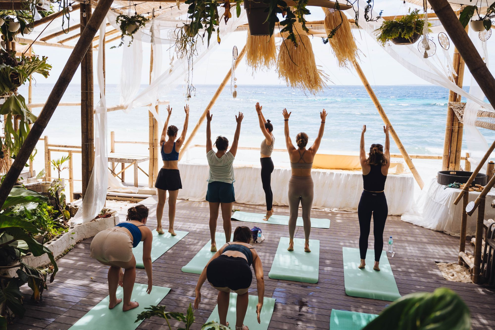
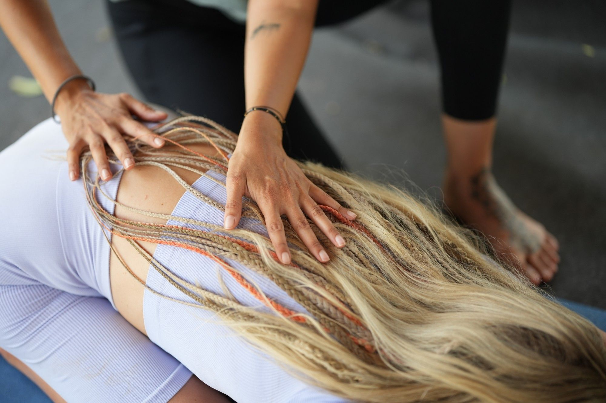
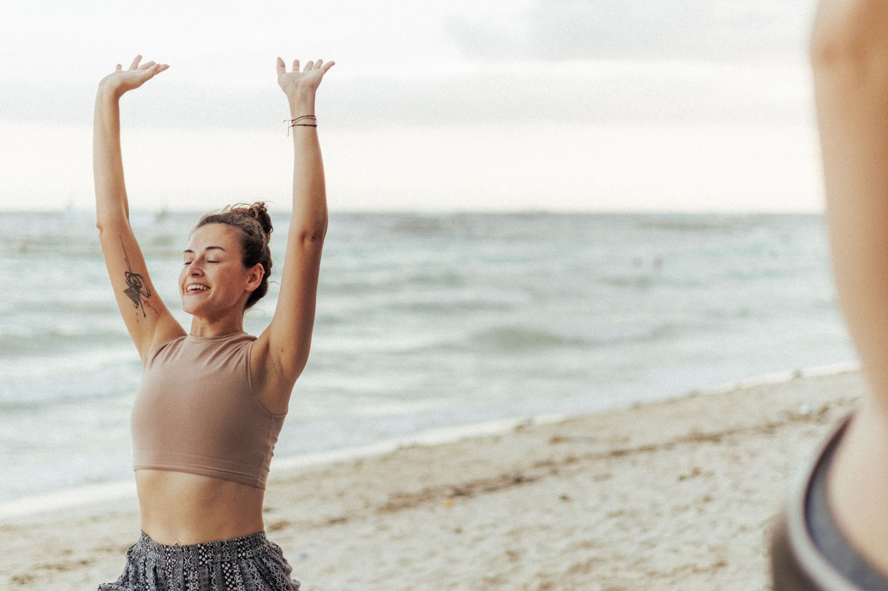

Dech, pohyb, dotek, voda.Cesta zpátky k sobě má víc podob.
Jsem Lenka Rekha, lektorka jógy a jógové terapie, průvodkyně dechem a freediverka. Téměř deset let pomáhám lidem naslouchat vlastnímu tělu. Individuálně, ve skupině, offline i online. Lekce jógy vedu v Přerově, Olomouci, Lipníku nad Bečvou a Hradčanech.
Rychlá orientace
Co tě dnes přivádí?
Vyber větu, která ti je nejblíž. Ukážu ti, co pro tebe můžu udělat.
- Cítím napětí v těle a potřebuju ho pustit.Chci vědomý dotek, ne jen mechaniku.→ Dotek
- Potřebuju se zklidnit a pořádně nadechnout.Pránájáma a dechové techniky pro klid a soustředění.→ Dech
- Necvičím málo, spíš necvičím správně.Chci detailní vedení, ne pořád to samé.→ Pohyb: integrovaná terapie
- Potřebuju se hýbat s radostí.Bez tlaku na výkon.→ Pohyb: hravá flow
- Táhne mě hloubka.Chci se naučit pracovat s nádechem, který vydrží.→ Voda
- Chci péči jen pro sebe.Individuálně, na míru, s podporou i mezi lekcemi.→ Individuálně
- Hledám jógu pro svůj tým.Jóga a dech přímo na pracovišti.→ Pro firmy
- Podnikám (nebo chci) a hledám ženy, které tomu rozumí.Neformální setkání v Přerově a okolí.→ Podnikavky Přerov

Nádech. Výdech. Přítomný okamžik.
 těší mě, Lenka
těší mě, Lenka
Moje cesta
Byla jsem političkou, spolumajitelkou kavárny a devět let jsem strávila v korporátu. Pak přišel zlom, který umlčel rozum.
Dnes předávám to, co jsem se musela naučit sama: být víc v těle a méně v hlavě skrze dech, dotek, pohyb a vodu. Londýn, Indie, Filipíny, Bali a zase zpátky v Přerově.

Jóga bez nálepek a mantinelů.
Čtyři cesty k sobě
Jak můžeme spolupracovat
Dech
Pránájáma, dechové techniky, tříhodinový workshop Flow State Reset a kurz Vnitřní ponor.
→
Pohyb
Jóga: hravá flow a integrovaná terapie ve skupině, individuální lekce, jóga pro firmy a kurz Vnitřní ponor.
→
Dotek
Masáž: intuitivní masáž, která spojuje sportovní masáž, aromaterapii, dech a thajskou masáž.
→
Voda
Freediving: kurz Vnitřní ponor, retreat V rytmu oceánu na Bali a od léta 2027 kurzy freedivingu.
→

Nádech, který vydrží déle, než si myslíš.
Co říkají ti, kdo se mnou cvičí
Díky Lenčinu individuálnímu přístupu je pro mě nyní jóga radostí, záda mě nebolí a cvičím i sama doma.
Jsem workoholik. Díky józe s Lenkou jsem zpomalila. Učím se mít ráda svoje tělo, trénuji dechové návyky a užívám si jejich vliv na energii i duši. Po hodině cvičení je mi skvěle. Umím pracovně vypnout, zklidnit se a zahnat negativní myšlenky.
Ráda bych touto cestou poděkovala za vynikající masáž. Moje zkušenost byla maximálně pozitivní, a to především díky tomu, že masáž byla zaměřena přesně na problematické partie (záda, lopatky, šíje), které mě dlouhodobě trápí. Oceňuji velmi citlivý, ale přitom účinný přístup. Podařilo se uvolnit i hluboké svalové napětí. Po návštěvě cítím výrazné povolení. Celková péče probíhala v klidném a příjemném duchu. Vřele doporučuji!
Časté otázky
Co tě možná zajímá
Je jóga vhodná i pro začátečníky?
Ano. Integrovaná jógová terapie je vhodná pro všechny, i pro ty, kdo mají za sebou zranění nebo je bolí záda. Hravá flow je spíš pro mírně pokročilé a pokročilé. Pokud si nejsi jistá nebo jistý, začni nezávaznou úvodní individuální lekcí.
Kde a kdy lekce jógy probíhají?
V Přerově (Jóga a Pilates, studio Sangha), v Olomouci (centrum Dákiní), v Lipníku nad Bečvou (Frida cafe) a v Hradčanech (sál OÚ). Aktuální dny a časy najdeš v rozvrhu.
Kolik stojí lekce?
Skupinové lekce jógy stojí 200–300 Kč. Balíček 5 individuálních lekcí je za 5 000 Kč, intuitivní masáž od 800 Kč, workshop Flow State Reset 900 Kč a kurz Vnitřní ponor 3 000 Kč.
Co je kurz Vnitřní ponor?
Není to klasický jógový kurz ani kurz potápění. Je to deset týdnů, ve kterých propojujeme metodiku freedivingu AIDA s jógou, dechem a všímavostí. Kurz má 10 lekcí ve studiu a 1 lekci ve vodě s certifikovaným instruktorem.
Jaký je rozdíl mezi pránájámou a dechovými technikami?
Dechové techniky jsou praktické nástroje, které použiješ hned, třeba na zklidnění nebo před spaním. Pránájáma jde hlouběji: je to komplexní jógová praxe, která pracuje s dechem, energií a pozorností zároveň.
Nabízíš jógu i pro firmy?
Ano, pravidelné lekce jógové terapie a dechu pro týmy v Přerově a Olomouci. Začínáme nezávaznou úvodní lekcí, balíčky jsou od 8 000 Kč měsíčně.
Jak se na lekci přihlásím?
Napiš mi na WhatsApp +420 778 522 095, e-mailem nebo přes formulář na webu. Odpovídám osobně, obvykle do 24 hodin.
Kontakt
Napiš mi.
Ať už váháš, co je pro tebe to pravé, nebo přesně víš, co chceš. Odpovídám osobně, obvykle do 24 hodin.
- WhatsApp+420 778 522 095
- E-maillenka.jungling@gmail.com
- Instagram@lenka_rekha_